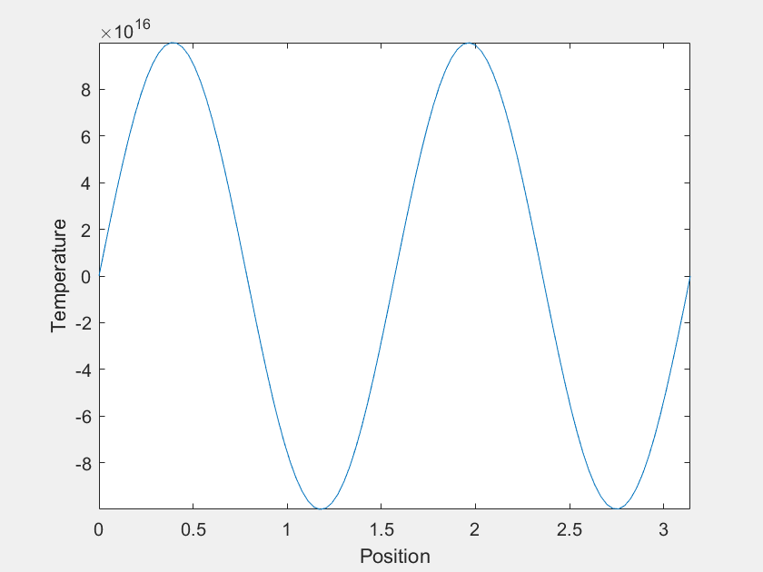
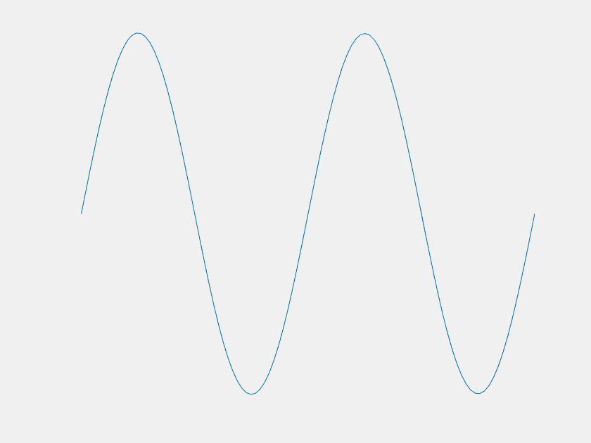
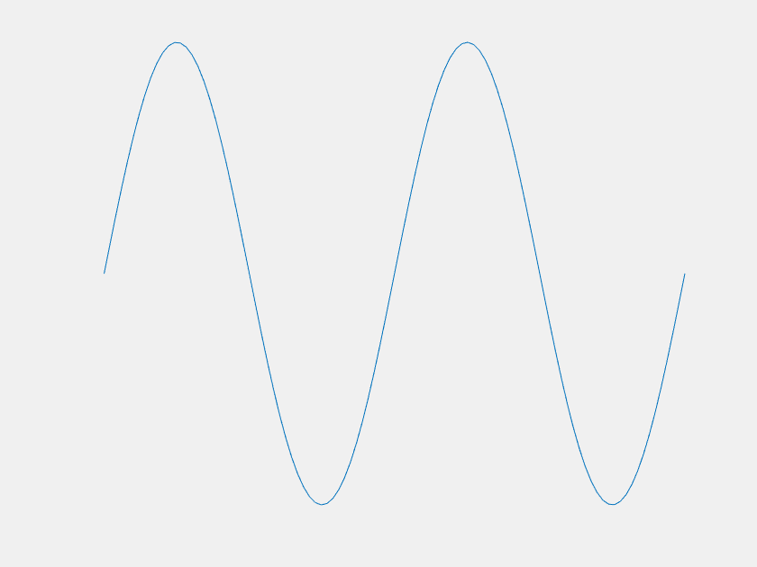

Here a special case of the 1D heat equation is considered. \(u_t(x,t)=u_{xx}(x,t)\), with boundary conditions \(u(0,t)=0\) and \(u(\pi,t)=0\), and with initial condition \(u(x,0)=f(x)\). The nuance will be in what we choose \(f(x)\) to be.
The solution will be of the form:
\( u(x,t)=\Sigma_{n=1}^\infty a_n \sin (nx) e^{-n^2t} \),
where \(a_n\) are the fourier coefficients of \(f(x)\).
Of course the \(n=1\) mode becomes dominant at large \(t\), but what about before that? For most \(f(x)\), it is easy to imagine that \(u(x,t)\) would just 'melt' until it becomes indistinguishable from the \(n=1\) mode. However, consider the case where, for the first few terms, the value of each \(a_n\) is much greater than the last. Each term decays much faster than the last as well, and one can imagine choosing the magnitudes of the \(a_n\)'s such that there is a period of time where each is dominant. This was done with the first four \(a_n\) to yield the following:
The temperature varies over more than 20 orders of magnitude, so maybe this isn't an observable phenomenon. The experimental setup I was imagining was a wire held in a vacuum with \(f(x)\) imposed by lasers, but I suspect there is no material that is solid over a sufficient range of temperatures. Also, I am neglecting heat capacity's temperature dependence, which might complicate things.
The axes are distracting, so let's get rid of them. Also, this model can demonstrate extreme sensitivity to initial conditions. Neglecting \(a_2\) and \(a_3\) only changes \(f(x)\) by about one part in a thousand, but it has a dramatic outcome on the systems trajectory.
| With \(a_2\) and \(a_3\) | Without \(a_2\) and \(a_3\) |
|---|---|
|  |  |
Last Updated: 5/21/2020